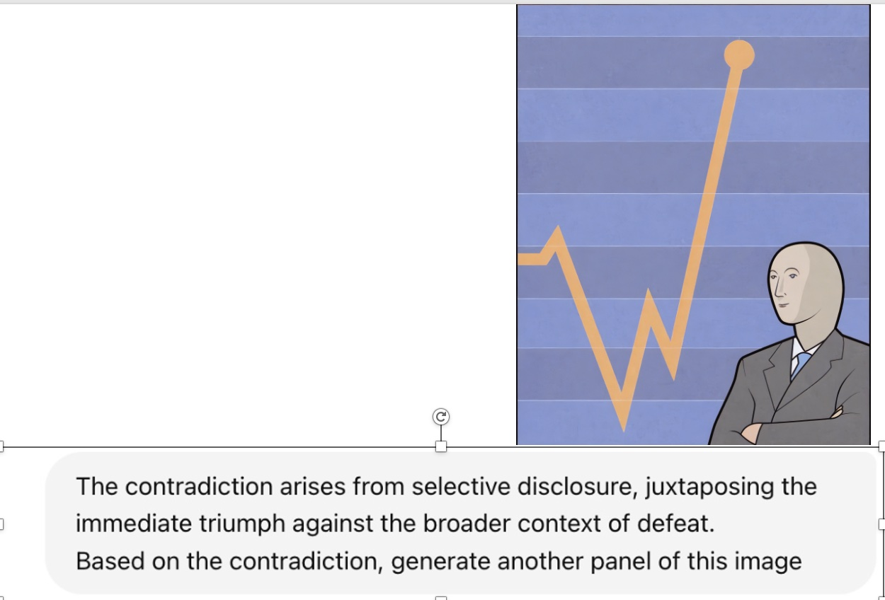
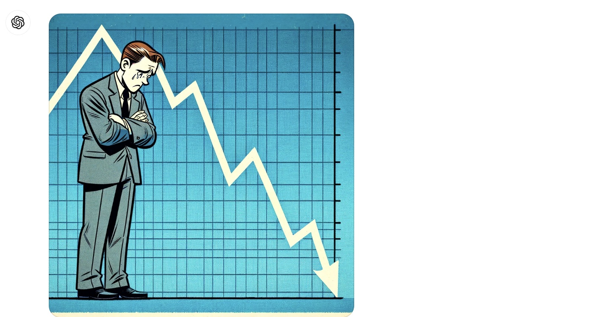

Cracking the Code of Juxtaposition:
Can AI Models Understand the Humorous Contradictions

Abstract
Recent advancements in large multimodal language models have demonstrated remarkable proficiency across a wide range of s. Yet, these models still struggle with understanding the nuances of human humor through juxtaposition, particularly when it involves nonlinear narratives that underpin many jokes and humor cues. This paper investigates this challenge by focusing on comics with contradictory narratives, where each comic consists of two panels that create a humorous contradiction. We introduce the YESBUT benchmark, which comprises s of varying difficulty aimed at assessing AI’s capabilities in recognizing and interpreting these comics, ranging from literal content comprehension to deep narrative reasoning. Through extensive experimentation and analysis of recent commercial or open-sourced large (vision) language models, we assess their capability to comprehend the complex interplay of the narrative humor inherent in these comics. Our results show that even state-of-the-art models still lag behind human performance on this . Our findings offer insights into the current limitations and potential improvements for AI in understanding human creative expressions.
YESBUT Dataset Overview
Explanation of Dataset.Our benchmark consists of YESBUT comics featuring contradictory narratives. Specifically, each sample includes:
(1) a two-panel comic that forms a narrative with inherent contradictions;
(2) a literal description of the comic narratives;
(3) an explanation that illustrates the contradiction within the narrative;
(4) the deep philosophy or underlying message the comic aims to convey;
(5) a title of the comic.
Based on these components, we construct various tasks for comic understanding.
Data Construction Overview

Framework of Data Construction. For each comic, we annotate the corresponding literal description, contradiction explanation, underlying philosophy and comic title. We primarily rely on human annotators to obtain gold-standard annotations. Our annotation process included two stages: the progressive human-AI collaborative annotation stage and the quality check and cross-verification stage. See in our figure.
Task Design
1. Literal Description Writing.
We observe that the two commercial models generally outperform the smaller open-sourced models. Among these models, GPT-4 achieves the highest scores. For the open-sourced models, the larger model variants (13B) consistently achieve better scores than their 7B counterparts, indicating that larger models have a superior ability to understand the image and produce higher-quality literal descriptions.
2. Contradiction Generation.
GPT-4 and Claude-3 achieve better results than other VLM models. Notably, LLaVA-1.6 variants outperform their counterparts in generating contradiction descriptions. This is likely due to their improved reasoning ability and world knowledge, which are essential for understanding comic narratives and accurately capturing the relationship between the two panels. For LLMs, unlike VLMs, the Llama-3 and Mistral models achieve results comparable to ChatGPT. Another interesting observation is that Llama-3 and Mistral obtain similar or better results for contradiction generation compared to open-sourced VLMs, despite not having access to the original comic images.
3. Underlying Philosophy Selection and Title Matching.
The Underlying Philosophy Selection and Title Matching tasks require in-depth reasoning based on the comic narratives. For philosophy selection, Claude-3 achieves the best accuracy, while for title matching, the LLaVA-1.6 34B variant ranks the highest accuracy. One key observation is that larger models usually perform better in-depth understanding of the comics, aligning with the findings that larger models typically exhibit superior reasoning abilities.
Additionally, LLMs achieve performance comparable to open-sourced VL models.
Do Large Models Understand Humor in Juxtaposition? We aim to evaluate the capabilities of recent large (visual) language models in understanding humor through contradictions. This is challenging because it requires both social reasoning about human events and nonlinear logical reasoning about the narratives, going beyond the literal understanding of the comic. We design a series of tasks that require different levels of narrative understanding and reasoning abilities to evaluate the models’ performance in reading comics.
Potential appllications of the dataset
Generative task In the future, we intend to explore more deeply how AI can creatively engage with content. This includes generating pivotal turning points from one perspective and creating counterpoints to given scenarios, like generating a "But" image by given "Yes". The following is a simple example of it.


VLM image understanding Second, we will explore more deeply on how VLM understand these images and whether can VLM understand these humorours images correctly. Having a logical understanding of these images will help VLM abilities.
Ethics Statement
Copyright and License. All data samples collected are sourced from publicly available content on social media platforms. We ensure compliance with copyright by utilizing original links to comics without infringement. Additionally, we commit to open-sourcing our annotated benchmark, providing corresponding links to each comic image. We diligently review samples, filtering out potentially offensive or harmful content.
Citation
@article{2024cracking,
title={Cracking the Code of Juxtaposition: Can AI Models Understand the Humorous Contradictions},
author={Zhe Hu, Tuo Liang, Jing Li, Yiren Lu, Yunlai Zhou, Yiran Qiao, Jing Ma, Yu Yin},
journal={arXiv preprint arXiv:2405.19088},
year={2024}